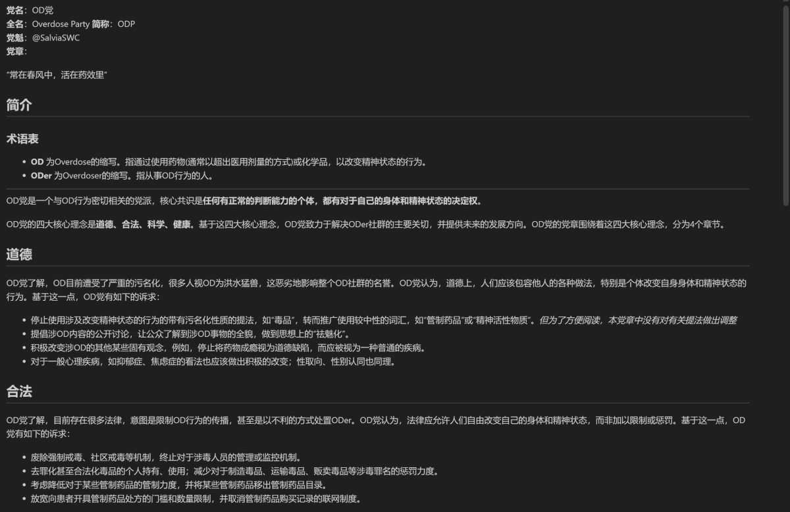
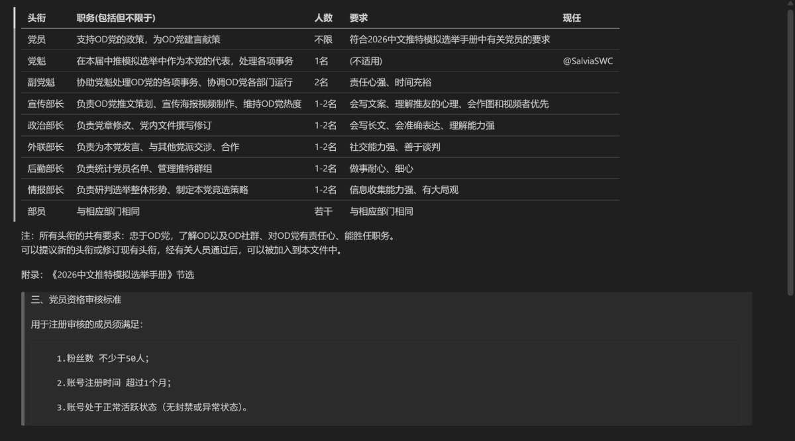

下面给出OD党推特群组链接，不查成分，没有政审，谁都能进，欢迎大家加入🥰注：你的账号不必符合《手册》中党员的资格才能加入，但该群组中符合资格的成员将被视为OD党党员，届时将上报模拟选举组委会。
https://t.co/LXyHCTvY0P
附件：OD党党章（原始版，未修订）

附件：OD党党章（原始版，未修订）


在本届 #中推模拟选举 中，OD党是一支独特的力量。OD党着眼于OD&毒品&药物滥用&精神活性物质等议题，提出有效议案，切实解决问题。这让OD党在竞选中占据独有优势，且大有发展潜力🤓
为优化OD党运营效率，现拟招募如下职务人员。请感兴趣的同志们联系窝报名哦🥺
预祝大家一起共度一段圆满的合作时光🥹 https://t.co/zKKGfl5z7w
为优化OD党运营效率，现拟招募如下职务人员。请感兴趣的同志们联系窝报名哦🥺
预祝大家一起共度一段圆满的合作时光🥹 https://t.co/zKKGfl5z7w